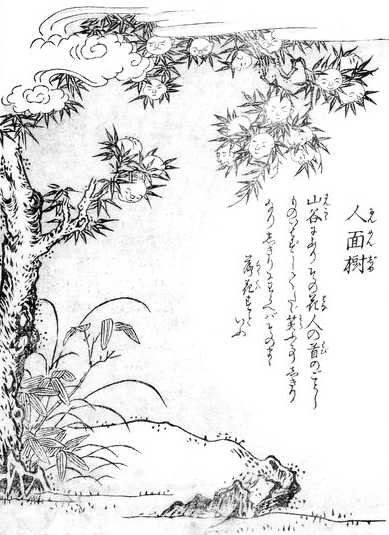

welcome to "hmmmm"
This is a site deticated to things that make you either be amazed, laugh, wonder whats wrong with people, or question reality.
there's not really a lot to say about the images on this site. If the image has context that I can find besides the obvious I will state said context, an example of this would be the image below.
fruitface
This picture depicts fruit from the "Jinmenju" or "Ninmeju" (translates to "human-face tree"). Text from the hyakumonogatari website states that, "This tree is found in mountain valleys. The fruit of the tree looks like a human head. It doesn’t say a word, but it's constantly laughing. It is said that if the fruit laughs too heartily, it falls from the tree." They also state that, "the Jinmenju trees are found in the south, and the fruit of the tree is called the jinmenshi, or human-faced child. They ripen in the fall, and if you eat the fruit they have a sweet/sour taste. It is said that the Jinmenju seed also has a human face, eyes, ears, nose, and mouth. It is possible that the trees were all eaten and it is why we don’t see them today." This legend originally came from China.
Here is an image of the jinmenju from the book Konjaku Hyakki Shūi by Toriyama Sekien.
